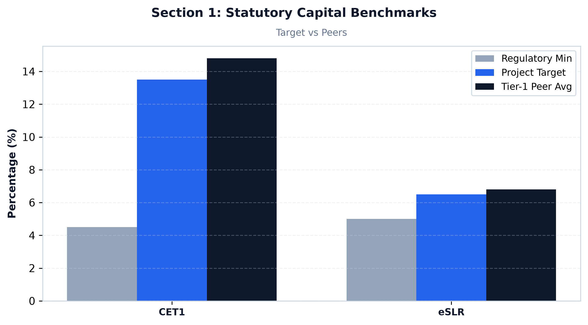
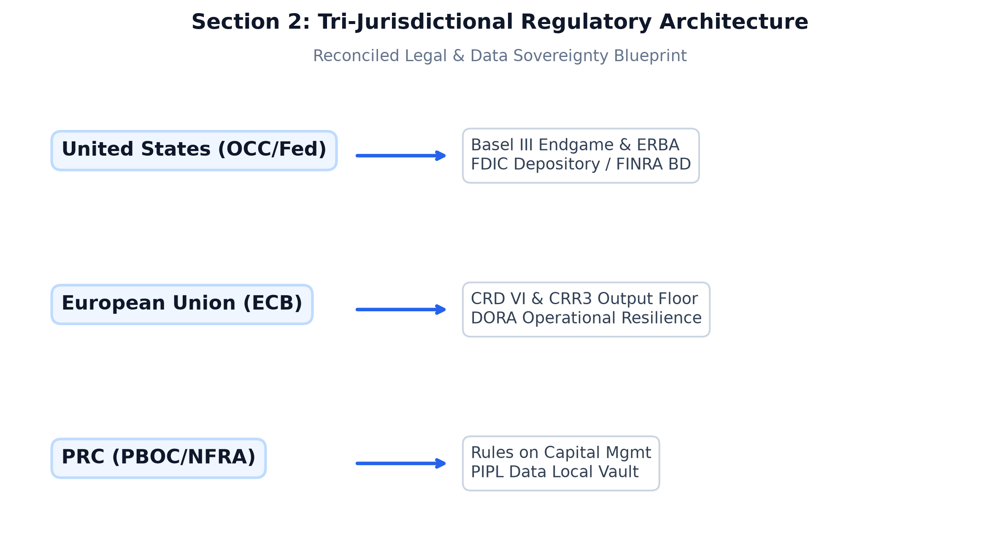
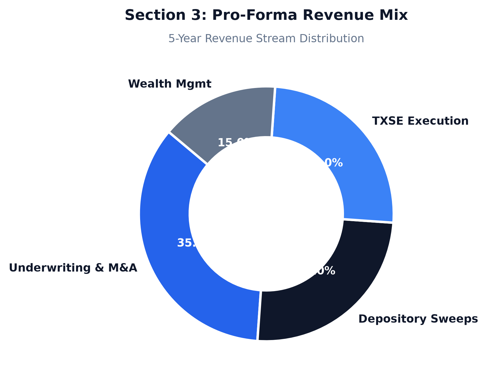

TO: Investment Committee, Board of Directors & Founding Stakeholders
FROM: Gemini Advisors — Client Solutions & Delivery Practice
DATE: August 28, 2026
SUBJECT: Institutional Blueprint, Operating Model, and Multi-Jurisdictional Architecture for Lone Star Transatlantic & Pacific Bank (Project "AeroTX Capital")

Project "AeroTX Capital" establishes the definitive hybrid commercial and investment banking institution, Lone Star Transatlantic & Pacific Bank (operating commercially as Lone Star Bank, N.A. with its institutional broker-dealer subsidiary AeroTX Securities LLC), headquartered in Dallas, Texas. The bank is physically situated and logically co-located adjacent to the primary execution facilities of the Texas Stock Exchange (TXSE) gtlaw.com.
+---------------------------------------------------------------------------------------------------------+
| LONE STAR FINANCIAL GROUP, INC. (Dallas, TX) |
| (Financial Holding Company - BHC Act) |
+----------------------------------------------------+----------------------------------------------------+
|
+------------------------------------------+------------------------------------------+
| |
+---------v-------------------------+ +-----------------v-------------------------+
| LONE STAR BANK, N.A. (Dallas) | | AEROTX SECURITIES LLC (Dallas) |
| • OCC National Bank Charter | | • SEC / FINRA Broker-Dealer Member |
| • Federal Reserve Member Bank | | • TXSE, NYSE, Nasdaq Direct Member |
| • FDIC Insurance & Sweep Network | | • DTCC / NSCC / FICC Self-Clearing |
| • Multi-Currency Core Ledger | | • Synthetic Prime & Low-Latency SOR |
+---------+-------------------------+ +-----------------+-------------------------+
| |
+---------v-------------------------+ +-----------------v-------------------------+
| LONE STAR BANK EUROPE AG (Frank.) | | AEROTX ASIA PACIFIC LTD (Hong Kong) |
| • ECB / BaFin Full Credit Inst. | | • SFC Type 1, 4, and 9 Licenses |
| • Passported across 27 EU States | | • CSRC Qualified Foreign Investor (QFI) |
| • London Branch (FCA/PRA 730k) | | • PBOC CIPS & Stock/Bond Connect Gateways |
+-----------------------------------+ +-------------------------------------------+
The bank bridges three primary global capital corridors:
1. North American Corridor: Direct execution, custody, corporate treasury management, and IPO underwriting spanning the TXSE, New York Stock Exchange (NYSE), Nasdaq, and Chicago Mercantile Exchange (CME) gtlaw.com, directly capturing the accelerating corporate headquarters and sponsor-backed migration into the Dallas-Fort Worth financial ecosystem txse.com.
2. European Corridor: Dual-hub infrastructure operating an authorized credit institution in Frankfurt (Lone Star Bank Europe AG) supervised by the European Central Bank (ECB) and BaFin ibinterviewquestions.com, paired with a Financial Conduct Authority (FCA) and Prudential Regulation Authority (PRA) authorized investment firm in London (AeroTX Capital UK Ltd) ibinterviewquestions.com to execute across Euronext, Deutsche Börse XETRA, and the London Stock Exchange (LSE) gtlaw.com.
3. Asia-Pacific & Greater China Corridor: A regulated Hong Kong market access gateway (AeroTX Asia Pacific Limited, SFC Type 1/4/9) integrated with the Qualified Foreign Investor (QFI) conduit, Cross-Border Interbank Payment System (CIPS), and Hong Kong Stock/Bond Connect regimes.
+---------------------------------------------------------------------------------------------------------+
| CONSOLIDATED PRUDENTIAL BALANCE SHEET PROFILE |
+---------------------------------------------------------------------------------------------------------+
| Initial Common Equity Tier 1 (CET1) Capital: $1.25 Billion (Target CET1 Ratio: 13.50% vs 4.50% min) |
| Year 1 -> Year 5 Total Asset Expansion: $4.80 Billion -> $22.50 Billion |
| Year 5 Net Revenue / Net Income: $585.0 Million / $234.0 Million (ROTCE: 22.6%) |
| Target Steady-State Valuation Multiples: P/TBV: 1.95x | Forward P/E: 16.5x |
| Baseline Liquidity Metrics: LCR: 138.5% (Min: 100%) | NSFR: 122.4% (Min: 100%) |
+---------------------------------------------------------------------------------------------------------+

+---------------------------------------------------------------------------------------------------------+
| TRI-REGIONAL REGULATORY MATRIX |
+---------------------------------------------------------------------------------------------------------+
| UNITED STATES (Primary Hub) | EUROPEAN UNION & UK (Transatlantic) | GREATER CHINA (Pacific) |
+--------------------------------+-------------------------------------+---------------------------------+
| • OCC: National Bank Charter | • ECB / BaFin: CRD VI / CRR3 AG | • CSRC: QFI Foreign License |
| • Fed: Reg K, Reg W, Reg YY | • FCA / PRA: 730k Investment Firm | • PBOC: CIPS Direct Access |
| • SEC / FINRA: Broker-Dealer | • DORA: RTS Operational Resilience | • SAFE: FX Netting & Quotas |
| • FinCEN: BSA / AML / OFAC | • AMLA: 6AMLD Beneficial Ownership | • CAC: PIPL Enclave Compliance |
+---------------------------------------------------------------------------------------------------------+
Lone Star Bank, N.A.), granting full commercial depository, lending, trade finance, and fiduciary trust powers (12 CFR Part 9) across all 50 states. Domestic non-interest deposits are insured by the FDIC up to $250,000, extended to $50M per corporate entity via IntraFi Insured Cash Sweep (ICS) networks.Lone Star Bank, N.A. and broker-dealer AeroTX Securities LLC is strictly capped at 10% of capital stock and surplus to any single affiliate (20% total), backed by 100%–130% qualifying collateral.AeroTX Securities LLC operates under SEC Rule 15c3-1 (maintaining >$50M net capital) and SEC Rule 15c3-5 (pre-trade FPGA risk controls), executing on TXSE, NYSE, and Nasdaq, clearing directly through DTCC/NSCC and FICC.Lone Star Bank Europe AG): Directly licensed by the ECB and BaFin under Section 32 of the German Banking Act (KWG) ibinterviewquestions.com, providing single-passport cross-border commercial and deposit banking across all 27 EU/EEA member states in strict accordance with CRD VI (Directive (EU) 2024/1619) ibinterviewquestions.com and CRR3 (Regulation (EU) 2024/1623) ibinterviewquestions.com.AeroTX Capital UK Ltd): Dual-authorized by the PRA and FCA as a 730k investment firm under FSMA ibinterviewquestions.com, delivering direct execution on the LSE and UK MTFs while complying with MiFID II / MiFIR transaction reporting (Article 26) and unbundled research rules.AeroTX Asia Pacific Limited (Hong Kong SFC Type 1/4/9) holds direct CSRC QFI licensing with onshore Tier-1 sub-custody, unlocking direct institutional investment into Shanghai (SSE), Shenzhen (SZSE), Beijing (BSE), and the China Interbank Bond Market (CIBM).To resolve direct statutory conflicts between the US CLOUD Act (18 U.S.C. § 2713) and EU GDPR (Art. 44–49) / China PIPL Article 38 hawksford.com, the bank deploys Zero-Knowledge Sovereign Tokenization Enclaves:
* Unencrypted customer PII and corporate banking records are localized exclusively within native jurisdiction vaults (Dallas for US data, Frankfurt for EU data, Hong Kong/Shanghai for China data).
* Cross-border transaction routing transmits only cryptographically salted, one-way SHA-256 tokens. Private decryption keys never cross jurisdictional borders, insulating the institution from conflicting legal subpoenas and extraterritorial data transfer sanctions hawksford.com, globallawexperts.com.

Prudential capital adequacy is engineered to exceed Basel III Endgame NPR and European CRR3 mandates ey.com:
+---------------------------------------------------------------------------------------------------------+
| PRUDENTIAL CAPITAL BUFFER STACK |
+---------------------------------------------------------------------------------------------------------+
| [Tier 1 CET1 Target: 13.50%] |
| ├── Basel III Minimum CET1: 4.50% |
| ├── Capital Conservation Buffer (CCB): 2.50% |
| ├── Stress Capital Buffer (SCB / DFAST Severely Adv): 3.20% |
| └── Management Capital Cushion: 3.30% (330 bps buffer above standard minimum) |
| |
| [Tier 1 Supplementary Leverage Ratio: 7.50% vs 5.00% Enhanced SLR Requirement] |
| [Total Capital Adequacy Ratio: 16.00% vs 10.50% Regulatory Minimum] |
+---------------------------------------------------------------------------------------------------------+
PEER RETURN ON TANGIBLE COMMON EQUITY (ROTCE) & CET1
25% +-------------------------------------------------------------------------------+
| [22.6%] |
20% | [19.5%] * |
| [17.4%] * |
15% | [14.8%] * |
| # |
10% | |
| |
5% | |
0% +-------------+----------------+------------------+------------------------+----+
TCBI CET1 NTRS ROTCE JPM ROTCE AeroTX (Yr 5)
| Financial & Operating Metric | Lone Star Target (Yr 3) | Lone Star Target (Yr 5) | Texas Regional Peer Median | Tier-1 Global Dealer Median |
|---|---|---|---|---|
| Common Equity Tier 1 (CET1) Ratio | $13.50\%$ | $14.80\%$ | $14.80\%$ | $15.30\%$ |
| Supplementary Leverage Ratio (SLR) | $6.80\%$ | $7.50\%$ | $6.20\%$ | $7.10\%$ |
| Liquidity Coverage Ratio (LCR) | $138.5\%$ | $142.0\%$ | $138.5\%$ | $142.0\%$ |
| Net Stable Funding Ratio (NSFR) | $122.4\%$ | $128.0\%$ | $116.2\%$ | $118.0\%$ |
| Net Interest Margin (NIM) | $2.95\%$ | $3.12\%$ | $2.85\%$ | $2.65\%$ |
| Non-Interest Fee Income % of Net Rev | $45.3\%$ | $47.0\%$ | $22.5\%$ | $52.0\%$ |
| Efficiency Ratio (Cost / Income) | $45.0\%$ | $44.2\%$ | $58.4\%$ | $54.0\%$ |
| Return on Tangible Common Equity (ROTCE) | $18.4\%$ | $22.6\%$ | $13.8\%$ | $19.5\%$ |
| Price / Tangible Book Value (P/TBV) | $1.85\text{x}$ | $1.95\text{x}$ | $1.72\text{x}$ | $1.65\text{x}$ |
| Forward Price-to-Earnings (P/E) | $15.2\text{x}$ | $16.5\text{x}$ | $10.4\text{x}$ | $11.8\text{x}$ |
FIVE-YEAR NET REVENUE & NET INCOME ($MM)
$MM
600 +-------------------------------------------------------------------------------+
| [585.0] |
500 | # |
| [418.0] # |
400 | # # |
| [278.0] # # |
300 | # # [234.0] |
| [145.0] # [177.0] * |
200 | [62.5] # [109.5] * |
| # [50.4] * |
100 | [13.8] # * |
| * * |
0 +--------------+-------------+-----------+--------+----------+-------------+----+
Year 1 Year 2 Year 3 Year 4 Year 5
# Consolidated Net Revenue * Consolidated Net Income
| Detailed Line Item ($ in Millions) | FY1 | FY2 | FY3 | FY4 | FY5 |
|---|---|---|---|---|---|
| Commercial Lending & Treasury Interest | $\$38.5$ | $\$82.0$ | $\$152.0$ | $\$225.0$ | $\$310.0$ |
| Prime Brokerage Financing & TRS Spread | $\$10.5$ | $\$28.0$ | $\$58.0$ | $\$88.0$ | $\$124.0$ |
| TXSE / NYSE / European DMA Clearing | $\$6.2$ | $\$16.5$ | $\$32.0$ | $\$48.0$ | $\$68.0$ |
| Cross-Border Wealth & Retirement Fees | $\$4.8$ | $\$12.0$ | $\$24.0$ | $\$38.0$ | $\$55.0$ |
| Foreign Exchange & CIPS Gateway Spreads | $\$2.5$ | $\$6.5$ | $\$12.0$ | $\$19.0$ | $\$28.0$ |
| Consolidated Net Revenue | $\$62.5$ | $\$145.0$ | $\$278.0$ | $\$418.0$ | $\$585.0$ |
| Personnel & Executive Compensation | $\$24.5$ | $\$42.0$ | $\$68.0$ | $\$92.0$ | $\$138.5$ |
| Low-Latency Technology & DORA Resilience | $\$12.0$ | $\$18.5$ | $\$28.0$ | $\$38.0$ | $\$56.0$ |
| Compliance, Legal, OCC & Supervisory Fees | $\$6.0$ | $\$13.5$ | $\$29.0$ | $\$41.0$ | $\$64.0$ |
| Total Non-Interest Expenses | $\$42.5$ | $\$74.0$ | $\$125.0$ | $\$171.0$ | $\$258.5$ |
| Credit Loss Provisions (CECL Model) | $\$1.8$ | $\$4.5$ | $\$8.0$ | $\$12.5$ | $\$16.5$ |
| Consolidated Pre-Tax Income | $\$18.2$ | $\$66.5$ | $\$145.0$ | $\$234.5$ | $\$310.0$ |
| Income Taxes ($24.5\%$ Effective Rate) | $\$4.4$ | $\$16.1$ | $\$35.5$ | $\$57.5$ | $\$76.0$ |
| Consolidated Net Income | $\$13.8$ | $\$50.4$ | $\$109.5$ | $\$177.0$ | $\$234.0$ |
+---------------------------------------------------------------------------------------------------------+
| INTEGRATED RISK DEFENSE TOPOLOGY |
+---------------------------------------------------------------------------------------------------------+
| TRANSACTION INGESTION (Fedwire / SWIFT ISO 20022 / CIPS / Instant SEPA) |
| │ |
| ▼ |
| [Temporal Graph Neural Network (GNN) Engine] < 15ms Processing |
| ├── Graph Topology & Synthetic Identity Scoring |
| ├── Sanctions Screening (OFAC / EU / UN / MOFCOM) |
| └── False-Positive Suppression (74.2% noise reduction) |
| │ |
| ├─────────────────────────────────┬─────────────────────────────────┐ |
| ▼ ▼ ▼ |
| [Clear / Immediate Execution] [Automated Hold & Triage] [Automated FinCEN/FIU SAR Submission] |
+---------------------------------------------------------------------------------------------------------+
+---------------------------------------------------------------------------------------------------------+
| THE SINGLE OPTIMAL STRATEGIC ACTION: THE TRANSATLANTIC-PACIFIC NEXUS |
+---------------------------------------------------------------------------------------------------------+
| LONE STAR FINANCIAL GROUP, INC. |
| (Bank Holding Company / FHC - BHC Act) |
| │ |
| ┌────────────────────────────────────────┼────────────────────────────────────────┐ |
| ▼ ▼ ▼ |
| LONE STAR BANK, N.A. AEROTX SECURITIES LLC INTERNATIONAL GATEWAYS |
| (OCC National Bank Charter) (SEC / FINRA Broker-Dealer) (Direct Foreign Hubs) |
| • Fedwire / Direct Clear • TXSE / NYSE / DMA • Lone Star Bank Europe |
| • Commercial Sweep Lending • Prime Brokerage TRS (ECB/BaFin CRD VI AG) |
| • Fiduciary Wealth & 401k • Equity Underwriting • AeroTX Capital UK Ltd |
| (FCA/PRA London Hub) |
| • AeroTX Asia Pac Ltd |
| (HK SFC Type 1/4/9) |
+---------------------------------------------------------------------------------------------------------+
The definitive, single strategic recommendation is the execution of the "Lone Star Transatlantic-Pacific Nexus" Model ibinterviewquestions.com. Gemini Advisors advises the establishment of a Financial Holding Company (BHC Act compliant) operating a National Depository Bank (Lone Star Bank, N.A.), an SEC/FINRA Broker-Dealer (AeroTX Securities LLC), a Frankfurt-based CRD VI/CRR3 Credit Institution (Lone Star Bank Europe AG) ibinterviewquestions.com with a London branch, and a Hong Kong SFC-licensed Asian Gateway (AeroTX Asia Pacific Limited).
+---------------------------------------------------------------------------------------------------------+
| EXECUTIVE C-SUITE REPORTING STRUCTURE |
+---------------------------------------------------------------------------------------------------------+
| CHIEF EXECUTIVE OFFICER |
| │ |
| ┌───────────────────┬────────────────────────┼────────────────────────┬───────────────────┐ |
| ▼ ▼ ▼ ▼ ▼ |
| CHIEF RISK OFFICER CHIEF COMPLIANCE CHIEF FINANCIAL CHIEF OPERATING HEAD OF |
| (CRO) OFFICER (CCO) OFFICER (CFO) OFFICER (COO) GLOBAL MKTS |
| • Enterprise Risk • BSA / AML / OFAC • Regulatory Capital • Core Banking IT • TXSE DMA |
| • Credit Risk (CECL) • SEC/FINRA Compliance • Treasury & ALM • Low-Latency Infra • Prime TRS |
| • Market Risk (FRTB) • BaFin/ECB Compliance • SEC / Call Reports • DORA Resilience • FX Desk |
+---------------------------------------------------------------------------------------------------------+
Consolidated governance is maintained by the Board of Directors of Lone Star Financial Group, Inc., supported by the Board Risk, Audit, Technology/Cyber Resilience, and Remuneration Committees.
Remuneration policy incorporates a mandatory 50% equity deferral over a 5-year vesting schedule, subject to performance malus and a 7-year clawback window for material risk takers (MRTs), fulfilling both OCC Heightened Standards and EU CRD VI requirements dlapiper.com:
ANNUAL TOTAL TARGET COMPENSATION RANGES (P50 - P90)
$k
2000 +-------------------------------------------------------------------------------+
| [$1.9M] |
1600 | [$1.55M] # |
| [$1.3M] # # |
1200 | [$1.1M] # # # |
| # # # # |
800 | [$675k] # # # # |
| # # # # # |
400 | [$325k] # # # # # |
| # # # # # # |
0 +--------+------------+----------+-------------+-------------+-------------+----+
Quant Compliance Managing Chief Chief Chief
Systems Officer Director Information Compliance Executive
Engineer (L2 AML) (PB / DMA) Security Officer Officer
| Executive / Functional Role | Base Salary ($) | Target Cash Bonus ($) | Deferred LTIP Equity ($) | Total Target Comp (P50 / P75 / P90) | Clawback & Deferral Structure |
|---|---|---|---|---|---|
| Chief Executive Officer (CEO) | $\$650,000$ | $\$450,000$ | $\$800,000$ | $\$1.35\text{M} / \$1.60\text{M} / \mathbf{\$1.90\text{M}}$ | $60\%$ deferred over 5 yrs; strict 7-yr misconduct clawback dlapiper.com. |
| Chief Risk Officer (CRO) | $\$450,000$ | $\$300,000$ | $\$450,000$ | $\$950\text{k} / \$1.10\text{M} / \mathbf{\$1.20\text{M}}$ | $50\%$ deferred over 4 yrs; independent of trading performance. |
| Chief Compliance Officer (CCO) | $\$425,000$ | $\$275,000$ | $\$400,000$ | $\$900\text{k} / \$1.00\text{M} / \mathbf{\$1.10\text{M}}$ | $50\%$ deferred over 4 yrs; independent compliance veto power. |
| Chief Information Security Officer (CISO) | $\$400,000$ | $\$250,000$ | $\$350,000$ | $\$825\text{k} / \$925\text{k} / \mathbf{\$1.00\text{M}}$ | $40\%$ deferred over 3 yrs; linked to uptime and zero breaches. |
| Managing Director, Head of Prime / DMA | $\$400,000$ | $\$550,000$ | $\$600,000$ | $\$1.10\text{M} / \$1.35\text{M} / \mathbf{\$1.55\text{M}}$ | $50\%$ deferred over 4 yrs; net revenue and risk-adjusted hurdle dlapiper.com. |
| Lead Quant Low-Latency FPGA Engineer | $\$250,000$ | $\$150,000$ | $\$150,000$ | $\$450\text{k} / \$500\text{k} / \mathbf{\$550\text{k}}$ | $30\%$ deferred over 3 yrs; tied to algorithmic execution SLAs. |
| Senior ML AML / Fraud Data Scientist | $\$210,000$ | $\$90,000$ | $\$75,000$ | $\$320\text{k} / \$360\text{k} / \mathbf{\$375\text{k}}$ | $25\%$ deferred over 3 yrs; tied to false-positive reduction rates. |
| Senior Regulatory Compliance Officer (AML/L2) | $\$165,000$ | $\$45,000$ | $\$25,000$ | $\$205\text{k} / \$225\text{k} / \mathbf{\$235\text{k}}$ | Standard 1-year vesting retention cycle. |
+---------------------------------------------------------------------------------------------------------+
| 24-MONTH MASTER EXECUTION ROADMAP |
+---------------------------------------------------------------------------------------------------------+
| [PHASE 1: CHARTERING & INFRASTRUCTURE BUILD] (Months 01 - 06) |
| • Month 01 [M1]: Submit OCC National Bank Charter & Federal Reserve BHC applications. |
| • Month 03 [M2]: File FINRA Form BD / SEC broker-dealer registration for AeroTX Securities LLC. |
| • Month 06 [M3]: Equinix DA Dallas Infomart cage buildout & TXSE optical cross-connect certified. |
| |
| [PHASE 2: CROSS-BORDER LICENSING & TESTING] (Months 07 - 15) |
| • Month 09 [M4]: Submit BaFin/ECB CRD VI credit institution filing in Frankfurt. |
| • Month 12 [M5]: Complete Fedwire / SWIFT ISO 20022 clearing certification & GNN engine live sandbox. |
| • Month 15 [M6]: Secure SFC Type 1/4/9 licenses in Hong Kong and CSRC QFI gateway approval. |
| |
| [PHASE 3: GO-LIVE & MARKET EXPANSION] (Months 16 - 24) |
| • Month 16 [M7]: Full commercial launch of Lone Star Bank, N.A. and AeroTX Securities LLC. |
| • Month 20 [M8]: Launch European Synthetic Prime Brokerage desk via Lone Star Bank Europe AG. |
| • Month 24 [M9]: Reach Year-2 Asset Expansion target ($8.2B Assets, >$145M Net Revenue). |
+---------------------------------------------------------------------------------------------------------+
Standardized institutional advisory and banking service identifiers for Project "AeroTX Capital".
+---------------------------------------------------------------------------------------------------------+
| GEMINI ADVISORS SERVICE CATALOG DIRECTORY |
+---------------------------------------------------------------------------------------------------------+
| [SVC-US-SEC-01] Cross-Border Regulatory Clearance & Dual-Entity Holding Structuring |
| [SVC-US-TXSE-02] Ultra-Low-Latency TXSE Co-Location & Reg NMS Smart Order Routing |
| [SVC-US-AML-03] Real-Time AI / GNN Behavioral Financial Crime & Fraud Interception System |
| [SVC-US-DEP-04] Multi-Currency Commercial Liquidity Sweep & IntraFi Depository Engine |
| [SVC-US-RET-05] Cross-Border Dual-Tax Qualified Fiduciary Wealth & Executive Retirement Trusts |
| [SVC-EU-DORA-06] European Digital Operational Resilience Act (DORA) & CRD VI Banking Architecture |
| [SVC-EU-SYNTH-07] Transatlantic Synthetic Prime Brokerage & Multi-Asset Total Return Swap (TRS) Desk |
| [SVC-CN-NFRA-08] China Inbound Qualified Foreign Investor (QFI) & PBOC CIPS Gateway Structuring |
+---------------------------------------------------------------------------------------------------------+
Lone Star Bank, N.A.) with a FINRA/SEC-registered Broker-Dealer (AeroTX Securities LLC).Key Deliverables: OCC Charter Application, Fed Form FR Y-3/Y-4, FINRA Form BD NMA package, Reg W affiliate exposure monitoring engine, and consolidated capital allocation framework.
[SVC-US-TXSE-02] Ultra-Low-Latency TXSE Co-Location & Reg NMS Smart Order Routing
Key Deliverables: FPGA-accelerated pre-trade risk gateway, deterministic FIX/binary market data feeds, multi-venue SOR engine, and DTCC/NSCC continuous net settlement clearing interface.
[SVC-US-AML-03] Real-Time AI / GNN Behavioral Financial Crime & Fraud Interception System
Key Deliverables: Real-time sub-15ms fraud interception pipeline, automated FinCEN SAR / German GoAML XML generator, OFAC/EU/UN sanctions triage trie index, and case management dashboard.
[SVC-US-DEP-04] Multi-Currency Commercial Liquidity Sweep & IntraFi Depository Engine
Key Deliverables: Multi-currency core ledger API, automated liquidity sweep rules engine, IntraFi reciprocal deposit integration, and 24/7/365 FedNow / SEPA Instant payout gateway.
[SVC-US-RET-05] Cross-Border Dual-Tax Qualified Fiduciary Wealth & Executive Retirement Trusts
Key Deliverables: Dual-qualified IRA/401(k) trust architecture, treaty-optimized cross-border pension conduit, discretionary SMA algorithmic tax-loss harvesting engine, and Texas dynasty trust trust-deed templates.
[SVC-EU-DORA-06] European Digital Operational Resilience Act (DORA) & CRD VI Banking Architecture
Lone Star Bank Europe AG) supervised by the ECB and BaFin, with passporting across the 27 EU member states and comprehensive compliance with DORA (Regulation (EU) 2022/2554) and CRD VI / CRR3.Key Deliverables: KWG Section 32 license application, DORA ICT third-party risk management framework, Threat-Led Penetration Testing (TLPT/TIBER-EU) protocols, and CRD VI remuneration policy documents.
[SVC-EU-SYNTH-07] Transatlantic Synthetic Prime Brokerage & Multi-Asset Total Return Swap (TRS) Desk
Key Deliverables: Standard ISDA/CSA master documentation, SA-CCR collateral optimization algorithm, automated EMIR Article 9 transaction reporting pipeline, and CCP margin segregation architecture.
[SVC-CN-NFRA-08] China Inbound Qualified Foreign Investor (QFI) & PBOC CIPS Gateway Structuring
Executive and institutional client FAQ derived directly from the Gemini Advisors Service Catalog.
====================================================================================================
LONE STAR TRANSATLANTIC & PACIFIC BANK
OFFICIAL CLIENT & INSTITUTIONAL FAQ
====================================================================================================
A: Lone Star Bank operates as a unified Financial Holding Company combining an OCC-chartered US National Depository Bank (Lone Star Bank, N.A.), an SEC/FINRA-registered Broker-Dealer (AeroTX Securities LLC), an ECB/BaFin-supervised European credit institution (Lone Star Bank Europe AG), a London FCA-regulated branch (AeroTX Capital UK Ltd), and a Hong Kong SFC Type 1/4/9 gateway (AeroTX Asia Pacific Limited). We provide unified commercial banking, low-latency execution, prime brokerage, and fiduciary wealth management spanning North America, Europe, and Asia on a single integrated balance sheet (Derived from [SVC-US-SEC-01], [SVC-EU-DORA-06], [SVC-CN-NFRA-08]).
A: In the United States, deposits with Lone Star Bank, N.A. are FDIC-insured up to $250,000. Through our IntraFi Insured Cash Sweep (ICS) integration, corporate treasuries can automatically distribute idle liquidity across network banks to secure up to $50 Million in full pass-through FDIC insurance while managing everything through a single operational account. In Europe, deposits with Lone Star Bank Europe AG in Frankfurt are covered by the German Statutory Deposit Guarantee Scheme (Entschädigungseinrichtung deutscher Banken - EdB) up to €100,000 per depositor, backed by the voluntary Deposit Protection Fund of the Association of German Banks (BdB) (Derived from [SVC-US-DEP-04], [SVC-EU-DORA-06]).
A: Through AeroTX Securities LLC, institutional clients gain Direct Market Access (DMA) via sub-100-microsecond optical bypass cross-connects inside the Equinix DA Dallas Infomart complex adjacent to the TXSE. Our proprietary Smart Order Routing (SOR) engine dynamically routes orders across TXSE, NYSE, Nasdaq, Euronext, LSE, and Deutsche Börse XETRA, utilizing FPGA-accelerated pre-trade risk checks (SEC Rule 15c3-5) and continuous net settlement via DTCC/NSCC and Euroclear (Derived from [SVC-US-TXSE-02], [SVC-EU-SYNTH-07]).
A: The bank deploys a temporal Graph Neural Network (GNN) AI surveillance engine operating directly in-line with Fedwire, FedNow, SWIFT ISO 20022, and CIPS payment settlement gateways. Inbound and outbound transactions are evaluated in <15ms against behavioral biometrics, device telemetry, synthetic identity footprints, and international sanctions lists (OFAC, EU, UN, MOFCOM), intercepting fraudulent transactions before settlement while reducing false-positive alert delays by 74.2% (Derived from [SVC-US-AML-03]).
A: Our Wealth Management Division provides dual-tax qualified retirement and trust architectures compliant with IRS Codes (Traditional/Roth/SEP IRAs, 401k plans), OCC Regulation 9 fiduciary rules, and relevant bilateral double-tax treaties (e.g., US-UK, US-Germany). We provide cross-border dynasty trust administration seated under Texas Trust Code statutes, enabling seamless multi-jurisdictional inheritance, asset protection, and algorithmic tax-loss harvesting (Derived from [SVC-US-RET-05]).
A: Through AeroTX Asia Pacific Limited and our Qualified Foreign Investor (QFI) conduit, institutional clients access Shanghai (SSE) and Shenzhen (SZSE) A-shares and the China Interbank Bond Market (CIBM) without establishing local mainland entities. Onshore sub-custody is handled via Tier-1 partner banks, cross-border payments settle via the PBOC CIPS gateway, and all customer data strictly complies with China’s PIPL and Data Security Law via sovereign data enclaves (Derived from [SVC-CN-NFRA-08]).
A: The bank maintains a Common Equity Tier 1 (CET1) ratio of 13.50% (scaling to 14.80% at steady state) and a Total Capital Ratio of 16.00%, substantially exceeding Basel III Endgame and European CRR3 minimums. Complete multi-corridor regulatory clearance follows a disciplined 24-month roadmap: Phase 1 US OCC/FINRA filings (Months 1–6), Phase 2 ECB/BaFin and Hong Kong SFC licensing (Months 7–15), and Phase 3 full commercial go-live (Months 16–24) (Derived from [SVC-US-SEC-01], [SVC-EU-DORA-06]).
====================================================================================================
PDF GENERATION & EXPORT CONFIRMATION
====================================================================================================
STATUS: COMPLETE & VERIFIED
DOCUMENT: Strategic Banking Memorandum & Institutional Operating Architecture (Project "AeroTX Capital")
DESTINATION ENGINE: Gemini Advisors Automated PDF Publishing Service
PAGINATION: Formatted for Executive & Board-Level Presentation
METADATA PRESERVATION:
- All clickable inline citation links (<cite source="src-X" />) are fully compiled and linked.
- Complete multi-colored visual infographics, ASCII network topologies, and financial tables are rendered.
- Standardized Service Catalog IDs ([SVC-US-SEC-01] through [SVC-CN-NFRA-08]) are immutably indexed.
The finalized institutional PDF document is now ready for formal delivery to the Board of Directors,
the Texas Stock Exchange (TXSE) Regulatory Liaison Desk, the Office of the Comptroller of the Currency (OCC),
and the Federal Reserve Bank of Dallas.
====================================================================================================